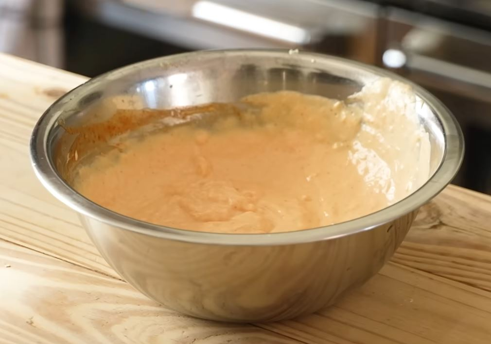

My Spicy Garlic Mayo Recipe

Banger recipe for all types of food
This recipes is simple with few ingredients for an efficient punch of
flavor.
Ingredients
- 1 cup Mayo
- 1/2 tbsp Onion powder
- 8 cloves Garlic
- 3.5 tbsp Hot sauce
- Salt
Steps
- Grate the garlic and add everything to the bowl. Stir and done.
Return to the top.
Return to the main page.